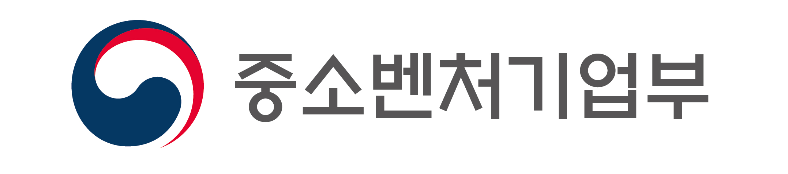

나의 공직 실무 성향은
어떤 모습일까요?
중소벤처기업부 인턴십 과정에서 발현될 나만의 진짜 일 처리 스타일을 확인해보세요.
문항 로딩 중...
선택지 A
선택지 B
실무 성향 분석 결과
유형 로딩 중...
인턴 협업 밸런스 가이드
🤝 찰떡 파트너
⚠️ 스파크 파트너
실시간 검사 현황 브리핑
유형 리스트를 클릭하시면 심층 해설지가 우측 스크린에 대형 출력됩니다.
현재 참여 완료자
0명
기수 내 대세 성향
데이터 수집 중
좌측의 인턴 유형을 선택하시면
대형 브리핑 카드가 활성화됩니다.
대형 브리핑 카드가 활성화됩니다.